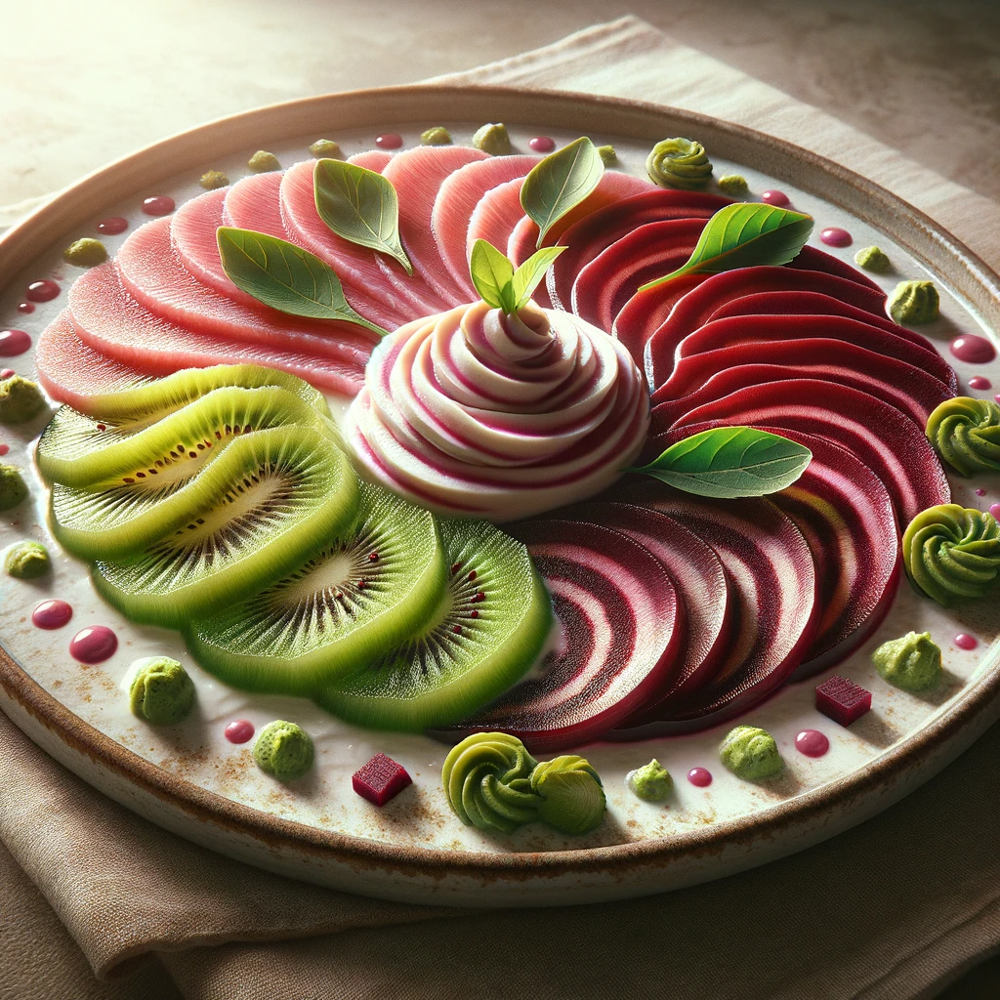

Carpaccio de Kiwi et Betterave avec Crème de Wasabi

Ingrédients:
- 3 kiwis, tranchés finement
- 1 petite betterave cuite, tranchée finement
- 2 cuillères à soupe de crème fraîche
- 1 cuillère à café de wasabi en pâte
- Zeste de citron pour garnir
- Graines de sésame noir pour garnir
Instructions:
- Disposez en alternance les tranches fines de kiwi et de betterave sur une assiette de service.
- Dans un petit bol, mélangez la crème fraîche avec le wasabi jusqu'à l'obtention d'une consistance lisse.
- À l'aide d'une cuillère, déposez délicatement des points de crème de wasabi sur le carpaccio.
- Garnissez le plat avec un peu de zeste de citron râpé et une pincée de graines de sésame noir.